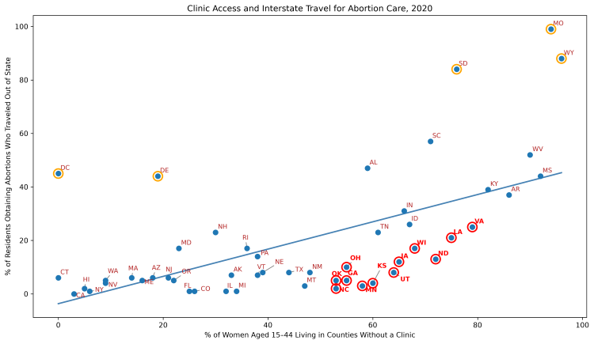
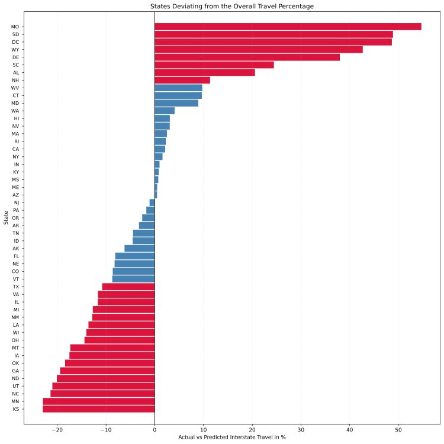

Proposition: States with better access to abortion services tend to have a lower percentage of residents traveling out of state for abortion care in the year 2020.
Data Source: Abortion Data by U.S. State from the Guttmacher Institute.
FOR the Proposition

Design Decisions and Rationale:
- 1. Selecting features % of women aged 15-44 living in a county without a clinic, 2020 and % of residents obtaining abortions who traveled out of state for care, 2020. Score: 2. Both features are associated to the stated proposition.
- 2. Fitting a trend line. Score: 0.5. Fitting a trend line makes it easier to identify positive and negative patterns in the relationship.
- 3. Abbreviating the state names and labeling it to the data belonging to the state. Score: 2. Adding and abbreviating the state name in the plot makes it easier to identify which states are closely following the trend and which are outliers.
AGAINST the Proposition

Design Decisions and Rationale:
- 1. Computing the deviation in the actual travel percentage and the predicted travel percentage by fitting the trend line. Score: 1.5. By plotting the deviations on the plot, residents from a state that travel more or less can be easily interpreted.
- 2. Using a zero reference line. Score: 0.5. The baseline of zero separates the higher rate of travel percentage from the lower rate.
- 3. Distinguishing the bars representing higher and lower travel rate by using a different color and by applying a threshold to highlight only the states having higher and lower travel rate greater than equal to 10. Score: -0.5. The deceptive technique used here is by applying the threshold by taking the absolute value of the deviation travel values.
Final Reflection
For the persuasive visualizations supporting the proposition, plotting the charts using a scatter plot and a bubble chart was pretty straightforward, because the charts were created using matplotlib and NumPy library in Python and there is an inbuilt function for fitting the trend line. What was more surprising were the outlier states in the data. Even with a moderately positive correlation (r = 0.597), there are a few states deviating substantially from the trend line, highlighting that the relationship was not consistent across all states.
Ethical analysis and visualization is presenting data truthfully, using appropriate visual designs, and clear axis and chart titles. Highlighting important information can help viewers unveil important patterns in the data and make informed decisions. However, persuasion becomes misleading when visualizations conceal relevant context, distort scales, or present transformed data as if it was the original. For example, a descending bar chart can become deceptive if the values being plotted are not the actual data but are instead created by multiplying the original measurements by another variable. If the chart is presented and labeled as though it shows the original values, viewers may be led to believe that certain states have much higher levels of the measured outcome than they actually do. In this case, the deception arises not from the bar chart itself, but from misrepresenting a derived metric as the underlying data. Therefore, persuasive visualization is acceptable when it improves understanding while preserving accuracy, but it becomes misleading when it changes the story the data actually tells.